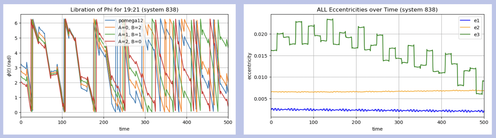

A Real-Time Web-Based Dashboard for Comprehensive Green Bank Telescope System Monitoring
The Green Bank Telescope (GBT) has relied on numerous independent software solutions to manage
its operational needs, resulting in the challenge that data are spread out across various applications, and
a variety of tools must be used to access it. We address this challenge by developing an integrated webbased dashboard that unifies access to various GBT information from the different software systems,
including the GBT Monitor and Control System (M&C), which serves as a central hub for all GBT
information, AstrID (GBT's observation management system), CLEO (Control Library for Engineers
and Operators), and Alda (GBT's metadata archiving system), within a single, user-friendly interface.
This dashboard utilizes Django, a Python web framework, to retrieve the necessary information from
the telescope and display it on a web page for the user. The web-based dashboard updates dynamically,
so users can see values coming from the telescope in real-time without the need for a full-page reload.
Side Project: Used analog radio equipment and mapped the Sagittarius A* region to produce a radio map of the active regions in the Milky Way.

SPOCK and its Improvements
Worked on improving SPOCK, a machine learning model that predicts the orbital stability of planetary systems. Focused on exploring how N-body resonances can affect whether a system stays stable, with the goal of making the model's classifications easier to understand. These explorations led to implementing a Hill Factor feature, which measures how close a pair of planets is to their critical separation for long-term stability, providing a stability diagnostic for a two-body system without running full N-body simulations. Enhanced existing features to improve its predictions and built stability tree visuals to determine how well the model performs.
Side Project: Developed a SPOCK user guide on how to generate new features, generate training data, and make stability trees using code.